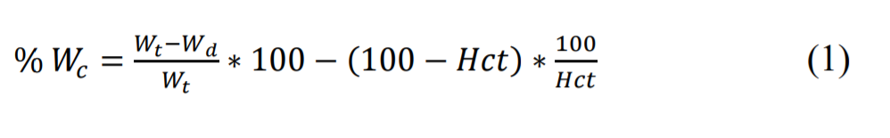

Effect of temperature on electrical cell conductivity
of human erythrocytes
Red blood cells
HRBCs were obtained from the blood bank (Suratthani Hospital, Thailand) and used within 3 days. The cells were first separated from the blood plasma by centrifugation at 2000 g for 8 min. The supernatant plasma and buffy coat was removed. The sedimented cells were used for the experiments.Preparation of the cell suspension
A 157 mM NaCl solution (300 mOsmol kg-1 ) containing 1 mM Sodium Phosphate buffer (pH 6.8) was used to resuspend the cells and the conductivity of the suspending medium was adjusted to a conductivity of 1.48 S m-1 . The standard conductivity of the bathing electrolyte suspensions at 20o C (σ20) was measured in the temperature compensation mode (σ20 = σΤ(1−0.0214(Τ−20)), where σΤ is the measured conductance at temperature T (o C) in a constant temperature bath using a conductivity meter (Mettler-Toledo, Switzerland).Volume experiments
The haematocrit volume (Hct) of the red-cell sediment was determined in haematocrit-capillaries by centrifugation at 10000 g for 8 min (Cence, China). From the Hct, the amount of measuring solution was calculated that was needed for the dilution of 50 µl of the sedimented cells to a final cell concentration of 10% (v/v). The cells were incubated in the measuring solution for 5 min and the Hct of the suspensions were determined by haematocrit-centrifugation at 10000 g for 8 min. In parallel, the cell number was microscopically determined using a standard haemocytometer (Improved Neubauer). From the cell count and the Hct after 5 min in suspended solutions, the mean cell Proceedings of the Russian German Conferencee on Biomedical Engineering 1 volume (MCV) was determined following standard clinical methods (Gedde andHuestis, 1979; Harris, 1984; Sudrisi, 2009; Glaser, 2000). A trapped water volume correction constant of 3% was assumed in all Hct calculations (Gedde and Huestis, 1979).Determination of cell water
Red blood cells in a standard 1.5 ml Eppendorf tube were spun down (10 000g) after 5 min of suspension in the experimental medium. 300 µl of the packed cell volume was then pipetted into a pre-weighed test tube (Gedde and Huestis, 1979; Harris, 1984; Sudrisi, 2009). In parallel, the Hct was determined experimentally. The tube was weighed before and after drying at 80 °C for 24 hours. The cell waterdetermination (Wc)was calculated from the wetted cells weight (Wt) and dried cells weightas (Wd) as follows (Harris, 1984)  m3 (± SE, n = 6) and cell water 69.95 (± 0.658) × 10-18 m3 (± SE, n = 6).Cytoplasmic conductivity
A Plot of calculated cytoplasmic conductivities over a range of temperatures is shown in Figure 2.The data were fitted to an exponential relation using non-linear least squares methods and the asymptotic errors of the fitted parameters calculated by matrix inversion. A temperature coefficient value of k = 0.06239 ± 0.00202 (± SE, n = 24) was obtained (Figure 2). The intracellular conductivities increased by a factor of 1.866 ± 0.0377 (± SE) for every increase in temperature of 10o C and hence the Q10 of cytoplasmic conductivity vs. temperature is a typical value of ≈ 2 found in many biological systems (Glaser, 2000; Nobel, 2009).